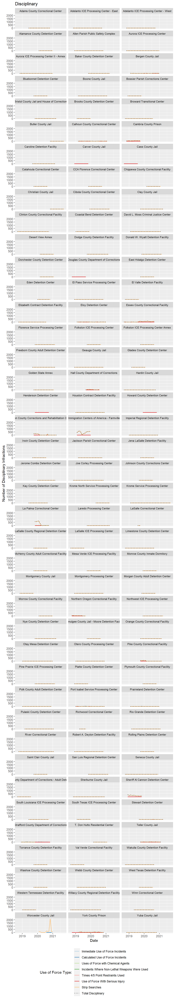

# Load necessary libraries
# Reading and wrangling
library(googlesheets4)
library(readr)
library(tidyverse)
library(janitor)
library(lubridate)
library(DT)
# Plotting
library(ggplot2)
library(RColorBrewer)
# Tables
library(kableExtra)
# Load custom function
source("function_clean_facility_names.R", local = knitr::knit_global())# Read Google Sheet incident worksheet, convert to data frame, and wrangle
df_324_inc <- read_sheet("https://docs.google.com/spreadsheets/d/1im5VSi3bIEi13O8WQ56wEIXSyNEstbGMylXXgD9bAG0/edit#gid=1858227071",
sheet="G-324A-19-inc",
col_types = "c") %>%
clean_names() %>%
# Run custom cleaning function
clean_facility_names() %>%
# df_specific changes
unite(date, year:month) %>%
mutate(facility = as.factor(facility),
state = as.factor(state),
date = ym(date)
) %>%
mutate_at(c(6:76), as.numeric)df_force <- df_324_inc %>%
# Subset the df to only the used cols
select(id, facility, date,
immediate_use_of_force_incidents:
strip_searches
) %>%
# Need the rowwise function to compute a row-at-a-time
# in the following mutate function
rowwise(id) %>%
# Create a new total column
mutate(total_use_of_force = sum(c_across(
immediate_use_of_force_incidents:
strip_searches
))) %>%
# Call a range of table columns and pivot long
pivot_longer(.,
cols= immediate_use_of_force_incidents:total_use_of_force,
names_to = "use_of_force_type",
values_to = "use_of_force_count") %>%
# Remove NA values
drop_na() %>%
# Explicitly define factors
mutate(use_of_force_type = factor(use_of_force_type, levels = c(
"immediate_use_of_force_incidents",
"calculated_use_of_force_incidents",
"uses_of_force_with_chemical_agents",
"incidents_where_non_lethal_weapons_were_used",
"number_of_times_4_5_point_restraints_were_used",
"use_of_force_with_serious_injury",
"strip_searches",
"total_use_of_force"
)))df_force %>%
group_by(use_of_force_type) %>%
summarise(`Total Use of Force by Type` = sum(use_of_force_count)) %>%
ungroup() %>%
kable(caption = "Total Use of Force by Type",
col.names = c("Use of Force Type", "Total Use of Force Type")) %>%
kable_styling(c("hover", "striped", "condensed", "responsive"))| Use of Force Type | Total Use of Force Type |
|---|---|
| immediate_use_of_force_incidents | 1184 |
| calculated_use_of_force_incidents | 325 |
| uses_of_force_with_chemical_agents | 362 |
| incidents_where_non_lethal_weapons_were_used | 18 |
| number_of_times_4_5_point_restraints_were_used | 97 |
| use_of_force_with_serious_injury | 2 |
| strip_searches | 20629 |
| total_use_of_force | 19170 |
df_force %>%
group_by(facility) %>%
summarise(total_use_of_force = sum(use_of_force_count)) %>%
arrange(desc(total_use_of_force)) %>%
ungroup() %>%
kable(caption = "Total Use of Force by Facility",
col.names = c("Facility", "Total Use of Force by Facility")) %>%
kable_styling(c("hover", "striped", "condensed", "responsive")) %>%
scroll_box(height = "300px")| Facility | Total Use of Force by Facility |
|---|---|
| Immigration Centers of America - Farmville | 10782 |
| La Palma Correctional Center | 6022 |
| Sheriff Al Cannon Detention Center | 4854 |
| Worcester County Jail | 3348 |
| Essex County Correctional Facility | 2620 |
| Hudson County Corrections and Rehabilitation Center | 2294 |
| York County Prison | 2017 |
| Cambria County Prison | 1500 |
| Pike County Correctional Facility | 1120 |
| Hall County Department of Corrections | 916 |
| Teller County Jail | 876 |
| Northern Oregon Correctional Facility | 862 |
| Eloy Detention Center | 496 |
| Bergen County Jail | 294 |
| Calhoun County Correctional Center | 282 |
| South Texas ICE Processing Center | 254 |
| Port Isabel Service Processing Center | 234 |
| Stewart Detention Center | 174 |
| Adelanto ICE Processing Center - West | 164 |
| Sherburne County Jail | 150 |
| Northwest ICE Processing Center | 138 |
| Bristol County Jail and House of Correction | 130 |
| Glades County Detention Center | 126 |
| Folkston ICE Processing Center | 122 |
| Otay Mesa Detention Center | 120 |
| Montgomery Processing Center | 116 |
| LaSalle ICE Processing Center | 112 |
| Baker County Detention Center | 92 |
| Krome Service Processing Center | 80 |
| Aurora ICE Processing Center | 66 |
| Aurora ICE Processing Center II - Annex | 66 |
| El Paso Service Processing Center | 66 |
| Jena LaSalle Detention Facility | 66 |
| River Correctional Center | 66 |
| Mesa Verde ICE Processing Facility | 60 |
| Pine Prairie ICE Processing Center | 56 |
| Donald W. Wyatt Detention Facility | 54 |
| Wakulla County Detention Facility | 54 |
| McHenry County Adult Correctional Facility | 46 |
| Irwin County Detention Center | 42 |
| Pulaski County Detention Center | 42 |
| Limestone County Detention Center | 40 |
| Prairieland Detention Center | 40 |
| Imperial Regional Detention Facility | 38 |
| Winn Correctional Center | 36 |
| Strafford County Department of Corrections | 33 |
| Bluebonnet Detention Center | 32 |
| Caroline Detention Facility | 32 |
| Johnson County Corrections Center | 28 |
| Adelanto ICE Processing Center - East | 26 |
| Jackson Parish Correctional Center | 26 |
| Boone County Jail | 24 |
| Houston Contract Detention Facility | 24 |
| Okmulgee County Jail - Moore Detention Facility | 24 |
| Morrow County Correctional Facility | 22 |
| Catahoula Correctional Center | 20 |
| Polk County Adult Detention Center | 20 |
| Dodge County Detention Facility | 18 |
| Orange County Correctional Facility | 18 |
| Otero County Processing Center | 18 |
| Yuba County Jail | 18 |
| CCA Florence Correctional Center | 16 |
| Plymouth County Correctional Facility | 16 |
| Shawnee County Department of Corrections - Adult Detention Center | 16 |
| Torrance County Detention Facility | 16 |
| Butler County Jail | 14 |
| Adams County Correctional Center | 12 |
| David L. Moss Criminal Justice Center | 12 |
| Eden Detention Center | 12 |
| Elizabeth Contract Detention Facility | 12 |
| Joe Corley Processing Center | 12 |
| Webb County Detention Center | 12 |
| Bossier Parish Corrections Center | 10 |
| Freeborn County Adult Detention Center | 10 |
| Krome North Service Processing Center | 10 |
| Broward Transitional Center | 8 |
| Clinton County Correctional Facility | 8 |
| Nye County Detention Center | 8 |
| Rio Grande Detention Center | 8 |
| Clay County Jail | 6 |
| Richwood Correctional Center | 6 |
| Val Verde Correctional Facility | 6 |
| Florence Service Processing Center | 4 |
| Folkston ICE Processing Center Annex | 4 |
| Hardin County Jail | 4 |
| Henderson Detention Center | 4 |
| Morgan County Adult Detention Center | 4 |
| Seneca County Jail | 4 |
| South Louisiana ICE Processing Center | 4 |
| Allen Parish Public Safety Complex | 2 |
| El Valle Detention Facility | 2 |
| Geauga County Jail | 2 |
| Howard County Detention Center | 2 |
| Kay County Detention Center | 2 |
| Rolling Plains Detention Center | 2 |
| Cass County Jail | 1 |
| Alamance County Detention Center | 0 |
| Brooks County Detention Center | 0 |
| Carver County Jail | 0 |
| Chippewa County Correctional Facility | 0 |
| Christian County Jail | 0 |
| Cibola County Correctional Center | 0 |
| Coastal Bend Detention Center | 0 |
| Desert View Annex | 0 |
| Dorchester County Detention Center | 0 |
| Douglas County Department of Corrections | 0 |
| East Hidalgo Detention Center | 0 |
| Golden State Annex | 0 |
| Jerome Combs Detention Center | 0 |
| Laredo Processing Center | 0 |
| LaSalle Correctional Center | 0 |
| LaSalle County Regional Detention Center | 0 |
| Monroe County Inmate Dormitory | 0 |
| Montgomery County Jail | 0 |
| Platte County Detention Center | 0 |
| Robert A. Deyton Detention Facility | 0 |
| Saint Clair County Jail | 0 |
| San Luis Regional Detention Center | 0 |
| T. Don Hutto Residential Center | 0 |
| Washoe County Detention Center | 0 |
| West Texas Detention Facility | 0 |
| Western Tennessee Detention Facility | 0 |
| Willacy County Regional Detention Facility | 0 |
# Generating a linetype vector for use in the plot
plot_lines <- c(
"solid",
"solid",
"solid",
"solid",
"solid",
"solid",
"solid",
"dotted"
)
# Use Color Brewer to set colors and modify
# the last color to be black for totals.
plot_colors <- brewer.pal(8, "Paired")
plot_colors[8] <- "#000000"
# Create plot labels
plot_labels <- c(
"Immediate Use of Force Incidents",
"Calculated Use of Force Incidents",
"Uses of Force with Chemical Agents",
"Incidents Where Non-Lethal Weapons Were Used",
"Times 4/5 Point Restraints Used",
"Use of Force With Serious Injury",
"Strip Searches",
"Total Disciplinary")
df_force %>%
# Calling the plot and formatting
ggplot(aes(x=date, y = use_of_force_count, linetype=use_of_force_type))+
geom_line(aes(color = use_of_force_type), size = .65) +
# setting the linetype
scale_linetype_manual(
values = plot_lines,
labels = plot_labels,
name = "Use of Force Type:",
guide = guide_legend(nrow = 8)
)+
# Setting the color
scale_color_manual(
values = plot_colors,
labels = plot_labels,
name = "Use of Force Type:",
)+
labs(title = "Disciplinary")+
ylab("Number of Disciplinary Infractions")+
xlab("Date")+
theme(
strip.text = element_text(size = 8),
legend.position = "bottom"
)+
# Set the legend to multiple rows
guides(col = guide_legend(nrow =8))+
# Wrap
facet_wrap(~ facility, ncol=3)